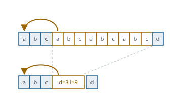

Jedes Packformat selbst entpackt – ohne java.util.zip
Funktionsübersicht für die Präsentation des envisionz-Frameworks, Stand 28.09.2026. Deflate und zlib hin und zurück, gzip und ZIP, XZ und LZMA, bzip2, Zstandard, LZ4, Snappy, LZO, Brotli und LZW lesend, dazu sieben Prüfsummen und eine Grenze gegen Entpackbomben. Je Verfahren: Zweck, Methoden, Einsatz im Framework, Anwendungen, Beispiele. Die Beispiele sind gekürzt.

java.util.zipGrundsätze des Moduls
java.util.zip. Eigener Code statt einer Hülle um Deflater. java.util.zip dient nur in den Proben als Gegenreferenz; aus dem JDK kommt allein SHA-256 für XZ (java.security).Inflater des JDK und die Ströme des JDK durch den eigenen Inflate; für die übrigen Formate stehen fremde Anker aus libzstd, libbzip2, lz4 und Python bereit.System.arraycopy entstünde die richtige Länge mit falschem Inhalt; in Deflate, LZ4, Snappy und LZO wird deshalb byteweise kopiert.Entpackgrenze (Vorgabe 1 GiB), und auch die tatsächliche Ausgabe wird dagegen geprüft.Grenze gegen Entpackbomben envisionz.compress
Entpackgrenze – höchstens so viel, wie erlaubt ist
Vier Byte zstd können einen Block von 128 KB ergeben, einige hundert Kilobyte gzip ein Gigabyte Nullen. Die Grenze gilt für die Ausgabe eines Aufrufs, zweifach: für das, was ein Kopf ankündigt, und für das, was tatsächlich entsteht. Vorrang: Grenze für einen Abschnitt eines Fadens, dann die Systemeigenschaft envisionz.entpacken.max, dann die Einstellung des Anwenders, dann die Vorgabe. Die Einstellung kommt über eine Systemeigenschaft herein, damit framework-swing compress nicht kennen muss. Hintergrund, Formeln und Pseudocode →
Methoden
grenze(),mit(grenze, arbeit)– Grenze für einen AbschnittsetzeGrenze(bytes),eingestellteGrenze(),ausEigenschaft()pruefe(groesse, verfahren),wachse(jetzt, gebraucht, verfahren),vorab(angekuendigt, vorab, verfahren)- Konstanten
VORGABE(1 GiB),EIGENSCHAFT,EINGESTELLT; AusnahmeGrenzueberschreitung
Eingesetzt in
Wofür
Fremde Dateien öffnen, ohne dass eine präparierte Datei die Anwendung mit einem OutOfMemoryError abreißt.
Beispiel – für einen Aufruf enger fassen
byte[] roh = Entpackgrenze.mit(64L << 20, () -> Gzip.entpacke(gz)); // höchstens 64 MiBDeflate und zlib, hin und zurück envisionz.compress.deflate
Deflate, Inflate, Zlib – RFC 1951 und 1950
Der Packer: LZ77 mit dynamischem Huffman, drei Suchstufen, träge Übereinstimmung, vor jedem Block der Vergleich mit dem gespeicherten Block (Zufallsdaten wachsen so um weniger als ein Prozent). Der Entpacker liest alle drei Blockarten. Gemessen an Dateien des Arbeitsbereichs: durchweg innerhalb weniger Prozent des JDK, auf einer WAV-Datei sogar darunter (4 575 536 gegen 4 583 829 Byte); 5 MB in 0,7 s auf Stufe NORMAL. Format und Entpacker: Hintergrund, Formeln und Pseudocode → Der eigene Packer: Hintergrund, Formeln und Pseudocode →
Abgleich gegen Spezifikation und Vergleichsprodukt: DEFLATE/zlib
Methoden
Deflate.packe(daten[, stufe]),Deflate.Stufe:SCHNELL,NORMAL,GRUENDLICHInflate.entpacke(daten[, ab, laenge[, woerterbuch]])Inflate.entpackeMitEnde(daten, ab, laenge)→Ergebnis(daten, ende)– wo der Strom endetZlib.packe(daten[, stufe]),Zlib.entpacke(daten[, woerterbuch])– Rahmen mit Adler-32
Eingesetzt in
Wofür
Der Unterbau fast aller Bild-, Mess- und Behälterformate; eigenes Packen, wo eine Anwendung zlib schreiben muss.
Beispiel – packen und wieder lesen
byte[] z = Zlib.packe(daten, Deflate.Stufe.GRUENDLICH);
byte[] roh = Zlib.entpacke(z);
Inflate.Ergebnis e = Inflate.entpackeMitEnde(strom, ab, laenge); // e.ende(): erstes Byte dahinterFlateDecode noch mit dem Inflater des JDK; der Umzug auf Inflate ist als erster sinnvoller Schritt genannt, aber nicht vollzogen.gzip und ZIP envisionz.compress.gzip · envisionz.compress.zip
Gzip – RFC 1952, alle Glieder
Zwei aneinandergehängte gzip-Dateien sind ein gültiges gzip. Ein Leser, der nach dem ersten Glied aufhört, gibt still die Hälfte zurück – hier werden alle Glieder gelesen. Die Längenangabe am Ende gilt modulo 232, die Zusatzfelder stehen in fester Folge, FHCRC prüft nur den Kopf. Gegen drei Anker aus Pythons gzip und alle sechzehn Verbindungen der Zusatzfelder geprüft. Hintergrund, Formeln und Pseudocode →
Abgleich gegen Spezifikation und Vergleichsprodukt: gzip · ZIP
Methoden
Gzip.entpacke(gz)– alle Glieder hintereinanderGzip.glieder(gz)→Glied:name,kommentar,zeit,daten,crc,laenge,systemname()
Eingesetzt in
Wofür
.gz-Dateien und gzip-gepackte Bildkacheln in FITS.
Zipdatei, Zipeintrag – ZIP rein lesend
Das Verzeichnis steht am Ende, dahinter darf ein Kommentar von bis zu 65 535 Byte stehen – auch mit der Endkennung darin. Gesucht wird deshalb vom Ende her die erste Stelle, an der die Angaben zueinander passen. Gelesen werden gespeicherte und Deflate-Einträge, Zip64, Namen als UTF-8 oder CP437; jeder Eintrag wird gegen seine CRC-32 gerechnet. Verschlüsselte Einträge, bzip2, LZMA, zstd, XZ und PPMd im ZIP werden benannt, nicht gelesen. Ein Prüfanker, den Pythons zipfile nicht mehr öffnet, wird gelesen.
Methoden
Zipdatei.oeffne(pfad)(AutoCloseable),eintraege(),finde(name)bytes(eintrag),bytes(name),kommentar(),befunde()Zipeintrag:name,methode,gepackt,ungepackt,pruefsumme,verschluesselt,verfahren(),istVerzeichnis()
Eingesetzt in
Wofür
Office-Dateien, NumPy-Archive, JAR und gewöhnliche ZIP-Behälter öffnen, ohne dass eine manipulierte Datei eine andere Dateiliste zeigt.
Beispiel – Inhalt einer XLSX-Datei
try (Zipdatei zip = Zipdatei.oeffne(Path.of("tabelle.xlsx"))) {
for (Zipeintrag e : zip.eintraege()) System.out.println(e.name() + " " + e.verfahren());
byte[] xml = zip.bytes("xl/workbook.xml");
zip.befunde().forEach(System.out::println);
}XZ, LZMA, LZMA2 envisionz.compress.lzma
Xz, Lzma, Lzma2 – der Bereichskodierer und sein Behälter
Der LZMA-Kern entscheidet jedes Bit über einen Bereichsleser mit anpassenden Modellen, zwölf Zuständen und vier gemerkten Abständen. LZMA2 legt Stücke darüber, XZ den Behälter: vielfach kodierte Ganzzahlen, Auffüllung auf Vielfache von vier (die Füllbytes müssen null sein), Prüfart none, CRC32, CRC64 oder SHA-256. Geprüft werden alle vier CRC32 des Rahmens, die Größen im Verzeichnis und der Prüfwert der Daten. Vorfilter Delta und BCJ (x86, PowerPC, IA-64, ARM, ARM-Thumb, SPARC, ARM64) werden zurückgerechnet; RISC-V wird benannt, nicht angewandt. Bereichskodierer und LZMA: Hintergrund, Formeln und Pseudocode → LZMA2, XZ und Vorfilter: Hintergrund, Formeln und Pseudocode →
Abgleich gegen Spezifikation und Vergleichsprodukt: XZ/LZMA
Methoden
Xz.entpacke(roh),Xz.lies(roh)→Ergebnis(daten, pruefart, bloecke, stroeme, geprueft),istXz(roh)Lzma.entpackeAlone(daten)– das alte.lzma-FormatLzma.roh(daten, ab, ende, lc, lp, pb, mass, woerterbuch),eigenschaften(p)Lzma2.entpacke(daten, ab, ende),Lzma2.lies(...)→Ergebnis(daten, ende)
Eingesetzt in
Wofür
.xz- und .lzma-Archive, Avro-Blöcke, Softwarepakete mit Sprungziel-Filtern.
Beispiel – XZ lesen und die Prüfung ansehen
Xz.Ergebnis r = Xz.lies(Files.readAllBytes(Path.of("messung.csv.xz")));
System.out.println(r.pruefart() + ", " + r.bloecke() + " Blöcke, geprüft: " + r.geprueft());bzip2 envisionz.compress.bzip2
Bzip2 – vier Schichten übereinander
Von den Bits zu den Daten: Huffman (bis zu sechs Bäume je Block) → RLE2 mit RUNA/RUNB → Move-to-Front → Burrows-Wheeler, darunter RLE1. RUNA/RUNB ist ein bijektives Zahlensystem zur Basis zwei; die BWT-Umkehrung läuft über eine Sprungtabelle aus einem Durchlauf, nicht über Sortieren. Bits kommen vom höchstwertigen Ende (BitLeserMsb), die Prüfsumme ist die ungespiegelte CRC-32 (Crc32Bzip2). Geprüft gegen sechs Anker aus libbzip2, auch mehrere Blöcke und mehrere Ströme in einer Datei. Hintergrund, Formeln und Pseudocode →
Abgleich gegen Spezifikation und Vergleichsprodukt: bzip2
Methoden
Bzip2.entpacke(bz)– alle Ströme hintereinanderBzip2.stroeme(bz)→Strom(bloecke, stufe, blockgroesse, gesamtcrc, endeBit),inhalt()Block(daten, crc, zeiger, zeichen, baeume, auswahlen, verwuerfelt)
Eingesetzt in
Wofür
.bz2-Archive, Avro-Blöcke, ältere Datenlieferungen.
Zstandard envisionz.compress.zstd
Zstd und Zstdwoerterbuch – RFC 8878
Rückwärts gelesener Bitstrom, FSE-Tabellen, Huffman über Gewichte statt Codelängen, drei gemerkte Abstände und ein Vortrag über Blockgrenzen hinweg – ohne ihn wäre keine Datei über 128 KB lesbar. Wörterbücher aufbereitet oder roh. Geprüft gegen vierzehn Anker aus libzstd 1.5.7 und außerhalb der Probe 120 Zufallsfälle gegen python-zstandard, alle Byte für Byte gleich. FSE und Huffman: Hintergrund, Formeln und Pseudocode → Rahmen, Literale und Sequenzen: Hintergrund, Formeln und Pseudocode →
Abgleich gegen Spezifikation und Vergleichsprodukt: Zstandard
Methoden
Zstd.entpacke(z[, wb]),Zstd.rahmen(z[, wb])→Rahmen(inhalt, bloecke, genannteGroesse, fenster, …)Zstd.Blockart, KonstanteKENNUNGZstdwoerterbuch.lies(bytes),kennung(),aufbereitet(),gemerkt(),inhalt()- intern:
Zstdbits,Zstdfse,Zstdhuff,Zstdblock
Eingesetzt in
Wofür
Moderne Datenformate und Archive; Ströme, die mit einem gemeinsamen Wörterbuch gepackt sind.
Beispiel – mit Wörterbuch entpacken
Zstdwoerterbuch wb = Zstdwoerterbuch.lies(Files.readAllBytes(Path.of("woerterbuch.bin")));
byte[] roh = Zstd.entpacke(gepackt, wb);Schnelle Packer der Datenformate envisionz.compress.lz4 · .snappy · .lzo
Lz4Block, Lz4, Snappy, SnappyRahmen, Lzo1x
Die Verfahren, die in Parquet, Arrow und Avro stecken. LZ4 zweifach: das nackte Blockformat und das Rahmenformat .lz4 mit verketteten Blöcken, überspringbaren Fremdrahmen und xxHash32-Prüfsummen. Snappy roh und im Rahmenformat mit maskierter CRC-32C. LZO1X liest keine Bits, sondern Befehlsbytes; der Folgezustand steckt in den unteren Bits des vorletzten Bytes. Anker aus lz4 1.9.4, google/snappy und liblzo2. Hintergrund, Formeln und Pseudocode →
Abgleich gegen Spezifikation und Vergleichsprodukt: LZ4 · Snappy · LZO
Methoden
Lz4Block.entpacke(block, groesse),entpacke(quelle, ab, laenge, ziel, zielAb, hoechstens)Lz4.entpacke(lz[, woerterbuch]),Lz4.rahmen(lz)→RahmenSnappy.entpacke(daten[, ab, laenge]);SnappyRahmen.entpacke(daten[, befunde]),istRahmen(daten)Lzo1x.entpacke(d[, ab, laenge], erwartet)
Eingesetzt in
Wofür
Big-Data-Exporte und Hadoop-Bestände lesen, ohne native Bibliotheken.
Beispiel – eine Parquet-Seite, deren ungepackte Größe bekannt ist
byte[] seite = Lz4Block.entpacke(gepackt, ungepackteGroesse);
byte[] alt = Lzo1x.entpacke(gepacktLzo, ungepackteGroesse);Brotli envisionz.compress.brotli
Brotli, Brotlibaum, Brotliwoerterbuch
Brotli bringt 122 784 Byte Text mit und verweist darauf wie auf schon Geschriebenes; ohne dieses Wörterbuch gäbe ein Leser auf dem ersten echten Text Unsinn aus. Drei unabhängige Blockeinteilungen (Literale, Befehle, Abstände), Kontext aus den zwei vorigen Bytes, vier gemerkte Abstände. Im JDK gibt es dafür keine einzige Klasse. Hintergrund, Formeln und Pseudocode →
Abgleich gegen Spezifikation und Vergleichsprodukt: Brotli
Methoden
Brotli.entpacke(daten[, anfang, laenge])– wirftBrotliExceptionBrotlibaum.ausLaengen(laengen),lies(bitleser, alphabetGroesse),symbol(bitleser)Brotliwoerterbuch.wort(laenge, nummer),umgeformt(laenge, nummer, umformung)
Eingesetzt in
Wofür
Parquet-Spalten, Web-Inhalte, alles, was mit Brotli ausgeliefert wird.
LZW für PDF, TIFF und GIF envisionz.compress.lzw
Lzw – ein Entpacker für drei Formate
Löst drei frühere Dekoder ab (PdfFilters.lzw, Giflzw, Tifflzw) und kennt ihre Unterschiede als Schalter: Bitfolge, wann die Codebreite wächst, Anfangsbreite, und wie streng ein kaputter Strom genommen wird. Meldungen erzeugt der Kern nicht; er sagt im Ergebnis, wie der Strom endete, und die Aufrufer melden selbst. Die Probe stellt ihn gegen den alten Wortlaut aller drei Dekoder und das Beispiel aus PDF 32000-1. Hintergrund, Formeln und Pseudocode →
Methoden
Lzw.entpacke(d, ab, laenge, einstellung)→Ergebnis(daten, erzeugt, ende, code, naechst)Einstellung:lsbZuerst,frueh,anfangsbits,streng,ungueltigUeberspringen,hoechstensEnde:ENDCODE,DATENENDE,UNGUELTIG
Eingesetzt in
Wofür
LZW-Ströme in PDF, TIFF und GIF mit einem einzigen, einmal geprüften Kern.
Beispiel – die Schalter von PDF (so ruft PdfFilters)
Lzw.Einstellung e = new Lzw.Einstellung(); // Vorgaben wie PDF und TIFF
e.frueh = earlyChange != 0 ? 1 : 0;
e.ungueltigUeberspringen = true;
byte[] roh = Lzw.entpacke(in, 0, in.length, e).daten();Prüfsummen envisionz.compress.pruef
Adler32, Crc32, Crc32c, Crc32Bzip2, Crc64, XxHash32, XxHash64
Sieben Prüfsummen, deren Verwechslung still falsche Ergebnisse gibt: CRC-32C (Castagnoli) ist nicht CRC-32 (IEEE), die bzip2-Variante ist ungespiegelt, zstd legt die unteren 32 Bit einer XXH64 ab, LZ4 als Kopfprüfsumme das zweite Byte einer xxHash32. Adler-32 läuft in Javas int über – gefunden erst beim Vergleich mit dem JDK über 300 kB. Hintergrund, Formeln und Pseudocode →
Methoden
Crc32.von(daten), fortlaufendnew Crc32(),nimm(...),wert(); ebensoAdler32,Crc64Crc32c.von(daten[, ab, laenge]),maskiere(c),entmaskiere(m)(Snappy)Crc32Bzip2.von(...),verbinde(bisher, block)XxHash32.von(daten[, ab, laenge, saat]),XxHash64.von(daten[, ab, laenge, saat])
Eingesetzt in
Wofür
Unversehrtheit von Dateien und Blöcken prüfen, auch außerhalb eines Packformats.
Beispiel – Prüfwerte
int crc = Crc32.von("123456789".getBytes(StandardCharsets.US_ASCII)); // CBF43926
int bz = Crc32Bzip2.von("123456789".getBytes(StandardCharsets.US_ASCII)); // FC891918
long xxh = XxHash64.von(daten);Bits, Huffman, Lauflänge envisionz.compress.bits · .huffman · .rle
BitLeser, BitLeserMsb, BitSchreiber, HuffmanCode, HuffmanDekoder, Rle
Die Bausteine darunter. Huffman-Längen per Paketverschmelzung (Larmore/Hirschberg): der optimale Code unter einer Längengrenze – Deflate erlaubt höchstens 15 Bit, die Codelängen-Tabelle 7. BitSchreiber.huffman() dreht die Codes um, denn Deflate füllt Bytes von unten und Huffman-Codes werden von oben gelesen. Rle ist PackBits, als Vorstufe gedacht. Hintergrund, Formeln und Pseudocode →
Methoden
BitLeser(daten[, ab, laenge]):bits(n),bit(),aufBytegrenze(),byteStelle();BitLeserMsb:bitsLang(n),uebrig()BitSchreiber:bits(wert, n),huffman(code, laenge),bytes(...),fertig()HuffmanCode.laengen(haeufigkeit, maxLaenge),codes(laenge),vollstaendig(laenge)new HuffmanDekoder(laenge).lies(leser);Rle.packe(daten),Rle.entpacke(daten)
Eingesetzt in
Wofür
Eigene Bitformate lesen und schreiben, längenbegrenzte Huffman-Codes für neue Packverfahren.
Beispiel – kanonischer Code unter 15 Bit
int[] laenge = HuffmanCode.laengen(haeufigkeit, 15);
int[] code = HuffmanCode.codes(laenge);
boolean ok = HuffmanCode.vollstaendig(laenge); // Kraft-PrüfungAbgleich gegen Spezifikation und Vergleichsprodukt
Jedes Format ist Merkmal für Merkmal gegen seine Spezifikation und gegen eine verbreitete, unabhängige Umsetzung geprüft – mit Fundstelle, Ampel für beide Seiten und einer Begründung zu jeder Abweichung. Wo das Vergleichsprodukt irrt, steht dabei, wie man es nachstellt. Alle Formate mit ihrer Deckung →
Einsatzmatrix im Framework
Welche Module welche Teile heute nutzen, im Quelltext gezählt (ohne Proben).
| Modul | Grenze | Deflate / zlib | gzip / ZIP | XZ | bzip2 | zstd | LZ4 / Snappy / LZO | Brotli | LZW | Prüfsummen | Wofür |
|---|---|---|---|---|---|---|---|---|---|---|---|
| framework-fileformats | ● | ● | ● | ● | ● | ● | ● | ● | ● | Bilder, Messdaten, HDF5/HDF4, Parquet, Arrow, Avro, Office-Dateien, NPZ, FITS | |
| framework-pdf | ● | LZWDecode | |||||||||
| app-settings | ● | Einstellkarte Sicherheit |
Deflate.packe, Zlib.packe, Rle.packe) haben außerhalb der Proben noch keinen Aufrufer; PdfWriter und PdfFilters.inflate benutzen weiter java.util.zip.